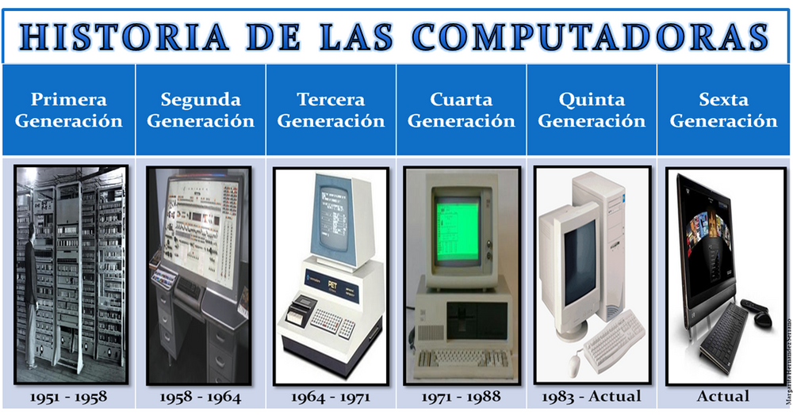

La historia de la computadora es el recuento de los eventos,
innovaciones y desarrollos tecnológicos del campo de la informática y la automatización, que
dieron origen a las máquinas que conocemos como computadoras, computadores u ordenadores.
Registra además su mejoramiento y actualización hasta alcanzar las versiones miniaturizadas
y veloces del siglo XXI.
Las computadoras, como todos sabemos, son las máquinas de cálculo más avanzadas y eficientes
inventadas por el ser humano. Están dotadas del suficiente poder de operaciones, la
suficiente autonomía y velocidad como para reemplazarlo en muchas tareas, o permitirle
dinámicas de trabajo virtuales y digitales que nunca antes en la historia habían sido
posibles.
La invención de este tipo de aparatos en el siglo XX revolucionó para siempre la manera en
que entendemos los procesos industriales, el trabajo, la sociedad y un sinfín de otras áreas
de nuestra vida. Afecta desde el modo mismo de relacionarnos, hasta el tipo de operaciones
de intercambio de información a escala mundial que somos capaces de realizar.